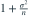
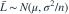
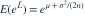
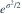
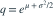

，本题假定
，本题假定  已知。令
已知。令  ，MLE 为
，MLE 为  。
。 为？
为？- A
- B1
- C
- D

我已思考，展开答案与解析
正确答案：A

，所以
。- 再乘

，并除以
，得 。
易错提醒对无偏的均值估计作指数变换一般会引入正偏差。
JYSG · 432精选 · 册内复旦大学432·2025年·10(2)；已知方差变式；PDF第41页（印刷页39）
同结构变式
，本题假定 已知。令 ，MLE 为 。 为？

，所以
。
，并除以
，得 。JYSG · 432精选 · 册内复旦大学432·2025年·10(2)；已知方差变式；PDF第41页（印刷页39）
同结构变式